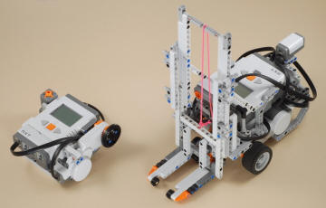
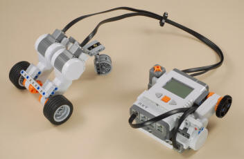

|
Using
Bluetooth Wireless Remote Control
-
The NXT robot
that you want to control should use motors B and C for
driving, and can optionally use motor A for something else.
The Forklift project is
a good example. If your own robot has the motors
oriented differently than the Forklift, than the remote
control may seem backwards and/or have left and right
reversed. You can either fix this on your robot or
modify the the Dial_BT_Robot program as desired.
-
Download the
Dial_BT_Robot
program to the NXT robot that you want to control (e.g.
Forklift), but don't run it yet.
-
Download the
Dial_Remote_BT
program to the Dial Remote Control, but don't run it yet.
|
 |
-
Establish a
Bluetooth connection from the Dial Remote NXT to the
controlled NXT. See your NXT User Guide for
instructions, summarized here:
-
Make sure
Bluetooth is turned on for both NXTs from the Bluetooth
menu (from NXT main menu)
-
From the
NXT for the Dial Remote control, go to the Bluetooth
menu, and if this is the first time these two NXTs have
been connected, pick Search. Pick Contacts if they
have connected before.
-
Choose the
name of the NXT for the robot to control from the list
and connect.
-
Connect
using connection number 1
-
If prompted
for a Passkey, you can accept the default 1234 key on
both NXTs
-
The NXTs
are connected when they both display a diamond after the
Bluetooth icon in the upper left corner of the screen.
-
Run the
Dial_Remote_BT
program on the Dial Remote Control NXT.
-
Run the
Dial_BT_Robot
program on the NXT robot that you are controlling.
-
The Forklift
and similar projects will operate as follows:
-
With no
button pressed, turn the dial forwards or backwards to
make the Forklift drive straight forwards or backwards
-
Press and
hold the Left arrow button and turn the dial to pivot
turn left.
-
Press and
hold the Right arrow button and turn the dial to pivot
turn right.
-
Press and
hold the orange Enter button and turn the dial to raise
and lower the lift.
|
Using Wired Remote Control
-
Use the two
longest wires to connect ports A and B to the
motors on a 2-motor vehicle without another NXT (such as the
Mini Rover) or
similar creation.
-
Run the
Dial_Remote_AB
program.
-
The Mini Rover
and similar projects will operate as follows:
-
With no
button pressed, turn the dial forwards or backwards to
make the rover drive straight forwards or backwards
-
Press and
hold the Left arrow button and turn the dial to pivot
turn left.
-
Press and
hold the Right arrow button and turn the dial to pivot
turn right.
-
Press and
hold the orange Enter button and turn the dial to sound
a tone.
|
 |
|